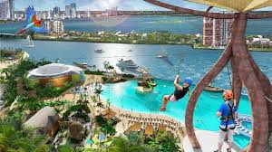
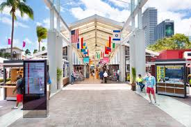
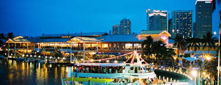

Miami, la ville où tout est possible.
Miami est une ville internationale à la pointe sud-est de la Floride. Son influence cubaine se reflète dans les cafés et magasins de cigares qui bordent la Calle Ocho de Little Havana. Sur les îles-barrières de l'autre côté des eaux turquoise de la baie de Biscayne se trouve Miami Beach, qui abrite South Beach. Ce quartier prestigieux est célèbre pour ses bâtiments art déco très colorés, ses plages de sable blanc, ses hôtels en bord de mer et ses boîtes de nuit à la mode.
A- Jungle island
Il s'agit d'une île artificielle ayant la forme de palmier d'une superficie de 5.72km² et très connue pour ses hotels de luxe ,ses restaurants internationnaux haut de gamme .De plus cette île dispose de plusieurs spas , des piscines à débordement et des clubs de plages se transformant en discothèque la nuit.

B-Bayside Market
Bayside Marketplace est un endroit incontournable si vous vous baladez dans le centre de Miami. Il est l’un des nombreux centres commerciaux de Miami.
Situé tout près du port, le complexe attire surtout les croisiéristes, mais pas que. Les locaux et les touristes y viennent également. En effet, c’est un endroit agréable pour venir flâner, faire du shopping ou encore manger.

